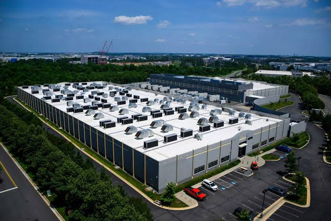

Data Centers Sustentáveis
O que são?
São centros de dados que utilizam tecnologias
de alta eficiência energética, fontes de
energia renovável e sistemas avançados
de resfriamento.
Práticas sustentáveis
- Uso de energia solar e eólica.
- Resfriamento eficiente dos servidores.
- Redução do consumo de eletricidade.
- Uso racional da água.